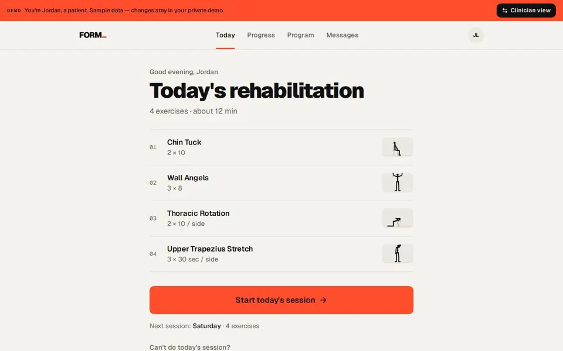
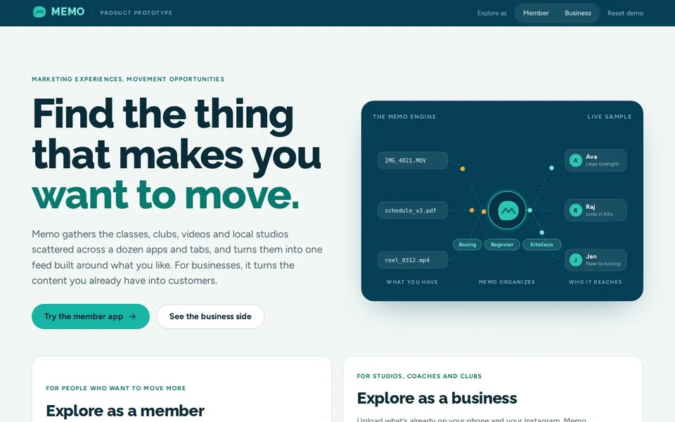
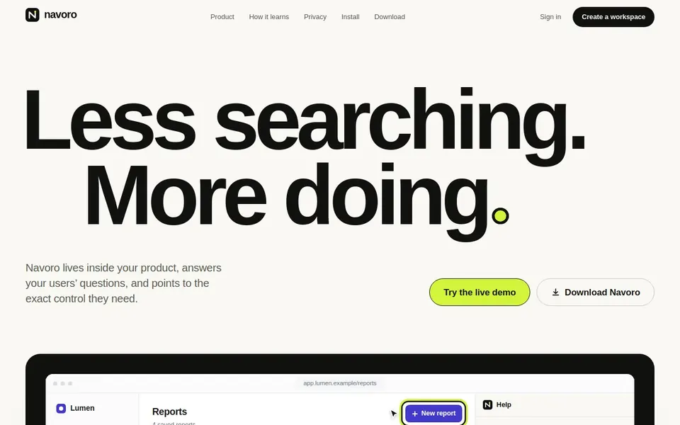
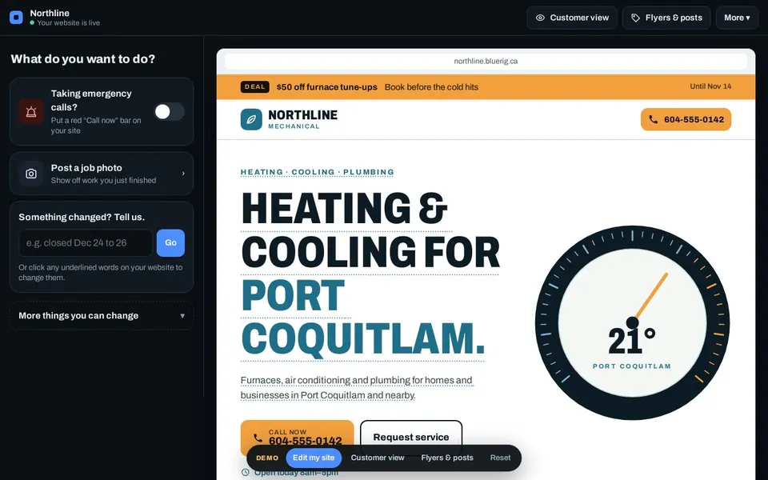

Search for the Good
A search engine for the people, products and projects making the world better. Search in plain language, or keep scrolling a feed of good things. Over 100 real examples from 15 countries.
Started as LinkedIn posts and interviews, then an early prototype I showed to organizations. Now it's a working, coded product. JumpIn is its planned social side.
HTML · CSS · JavaScriptHow it's built
- Built with
- Plain HTML, CSS and JavaScript.
- Data
- 104 hand-picked entries bundled with the site. Saves stay in the browser. No backend.
- How it works
- Search runs in the browser with no API. It works out what you mean (a place, something to buy, people), adds related words, and ranks results by weighted fields.


FORM
Helps physio patients actually do their home exercises. Patients get one clear session for today, and their physio sees how it went.
Try: switch between the patient's app and the physio's dashboard.
Next.js · TypeScript · Tailwind · PostgresHow it's built
- Built with
- Next.js, React, TypeScript, Tailwind. Drizzle for the database.
- Data
- Postgres with real accounts and sessions. The live demo runs Postgres inside your browser, so every visitor gets a private sample clinic.
- How it works
- Only events are stored. Missed days are worked out from the program in force, and two Hard or Painful ratings in a week flag the patient to their physio.

A concept exploring behavior change and incentives: bet on yourself instead of sports. Put money behind a goal, a sponsor matches it, friends can back you, and you earn the reward when you hit it.
React · Vite · TypeScriptHow it's built
- Built with
- React and Vite, TypeScript.
- Data
- Browser only (localStorage). Payments are simulated.
- How it works
- All the money rules (sponsor match, backers capped at 3×, milestone payouts, a 20% return for backers) are small functions with unit tests.

CoursePack
Demo, sample dataTurns YouTube into a course. It picks which videos are worth watching, puts them in order, and helps you check that you actually learned it.
React · TypeScript · TailwindHow it's built
- Built with
- React and Vite, TypeScript, Tailwind.
- Data
- Browser only. Videos and creators are fictional sample data.
- How it works
- Videos are ranked by learner feedback (40%), engagement (35%) and creator authority (25%), then by how well each fits its place in the course. The study partner answers from the transcript and cites timestamps, using rules rather than AI.


Base
A weekly set of 12 seasonal ingredients, prepped into reusable glass containers for local pickup in Vancouver, with recipes to cook that week.
Note: nothing can be bought yet. Prices are estimates.
React · TypeScript · SQLiteHow it's built
- Built with
- React and TypeScript. Pages generated ahead of time.
- Data
- A SQLite research database scores ingredients when the site is built. It rebuilds every Monday.
- How it works
- Each ingredient gets a 0–100 score (affordability, versatility, nutrition, season, price stability). A rule-based builder then fills 12 slots within a $52 budget and avoids repeating last week.

VanRadar
Anyone can use itDiscover companies being built in Vancouver. Browse by category on a radar, search, or shuffle.
Note: the company list doesn't update on its own yet.
HTML · CSS · JavaScriptHow it's built
- Built with
- Plain HTML, CSS and JavaScript.
- Data
- A list of 196 companies bundled with the site. No backend.
- How it works
- Search expands related words, so “AI” also finds robotics and voice. The default order is a shuffle that changes once a day.

Small groups of 5–7 people working toward the same health goal, with weekly check-ins, a shared challenge and a group leader.
Started as a university project. Now it's built.
HTML · CSS · JavaScriptHow it's built
- Built with
- Plain HTML, CSS and JavaScript.
- Data
- Browser only (localStorage), with sample data.
- How it works
- Onboarding matches you to Circles with the same goal, ranks them by how much lines up (meeting time, in person or online), and shows you why.

A personal feed of local fitness classes, clubs and studios, plus a side for businesses to share the content they already have.
Started as a university project. Now it's built.
HTML · CSS · JavaScriptHow it's built
- Built with
- Plain HTML, CSS and JavaScript.
- Data
- Browser only, with sample data.
- How it works
- The feed is ranked by a weighted score (interests, level, setting, group size, session length, trending), and the same rules write each item's “Why you're seeing this.”

In-app help that shows people how to do things. Ask what you're trying to do, and it points at the exact button on screen and walks you through it step by step. It runs in the browser, so nothing about the user is sent anywhere.
Where it's at: any web app can add it with one script tag. Free to download.
TypeScript · React · SQLiteHow it's built
- Built with
- TypeScript. A small, dependency-free script that any web app adds, plus a React dashboard.
- Data
- Runs in the user's browser from a static file built from your help docs. An optional hosted version uses SQLite.
- How it works
- Help articles written as numbered steps become guided walkthroughs. Keyword search finds the right one and starts from the step you've already reached. An optional AI model can only choose among the documented workflows.

Websites for HVAC and plumbing shops in Canada that the crew can update from the truck in under a minute: turn on emergency calls, add job photos, change prices and text customers for reviews.
Next.js · Supabase · Twilio · ResendHow it's built
- Built with
- Next.js and Supabase. Twilio for texts, Resend for email.
- Data
- Supabase: Postgres, magic-link sign-in, photo storage and realtime updates. The demo uses sample data.
- How it works
- Owners type changes in plain English (“closed Dec 24–26”). Rules turn that into edits, and an AI model is only called when the rules can't, with its answer checked.

A guide to the best places to eat, stay and go in big cities. Every pick links to the independent reviews and awards behind it, and nobody can pay to be listed.
Where it's at: Vancouver, Toronto and New York are live. Seven more cities are being researched.
TypeScript · Static site generatorHow it's built
- Built with
- TypeScript. A custom static site generator; pages are built ahead of time.
- Data
- Curated content files in the repo, checked on every build. Saved places stay in the browser. Rebuilt daily.
- How it works
- Ranking weighs each source's credibility, type and recency, gives less credit for each extra source, discounts pre-opening hype, and avoids too many of one kind.